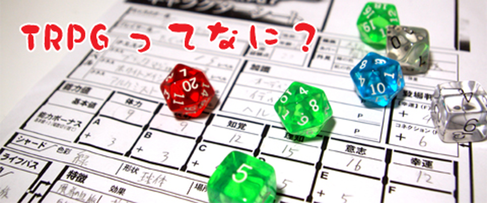

 TRPGとは テーブルトークRPG、あるいはテーブルトーク・ロールプレイングゲーム（テーブルトーク role-playing game、略称はTRPG） とは、テーブルゲームのジャンルのひとつ。ゲーム機などのコンピュータを使わずに、紙や鉛筆、サイコロなどの道具を用いて、 人間同士の会話とルールブックに記載されたルールに従って遊ぶ“対話型”のロールプレイングゲーム（RPG）を指す言葉である。 ジャガイモ3個 ニンジン1本 豚ブロック300g カレー粉1箱